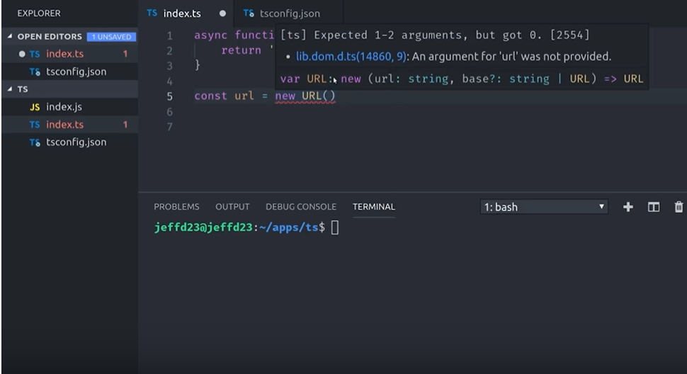

Can you easily write 1000 lines of JS and not go mad?
Do you have a team and collaborate effectively?
Yes? Are you actually using JS?
JS runs in a variety of devices and is a cross platform language.
But...
it hasn’t been designed as a large scale application development language
JS doesn't have type system...
No worries!
Typescript allows you to stay in the ecosystem of JS and have a statically typed system at the same time
Enjoy TypeScript:
Code navigation
Statement completion
Safe refactoring
Error checking before running a program
Transpiling latest versions of JS down to older targets
Feel ready to start? Go for it!
Install with npm
Doing this will give you access to tsc command which will run typescript compiler
Convert the code into vanilla JS
run tsc index.ts - tadam index.js was created!
Examples time!
Adding types to your programm
Transpilation capabilities
Classes
Autocomplete You can use autocomplete on the URL class and see your mistakes

Error Correction
Strong typing array
Flexibility
Some cool stuff
:
You can use all the modern language features of TypeScript in your applications, but you can still target and support older browsers.
You can select any version of JavaScript via the --target compiler option that you want, starting with the ECMAScript 3
Fun fact:
Visual Studio Code is written entirely on TypeScript
Bazzinga!